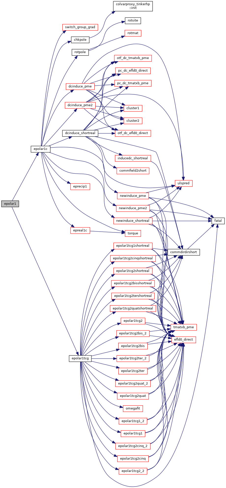
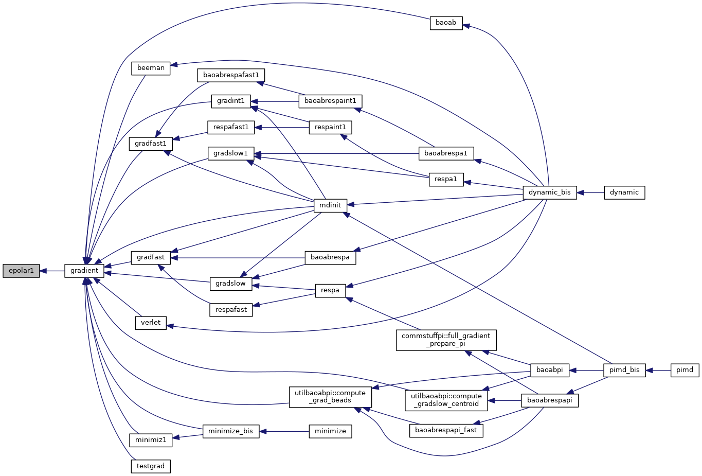
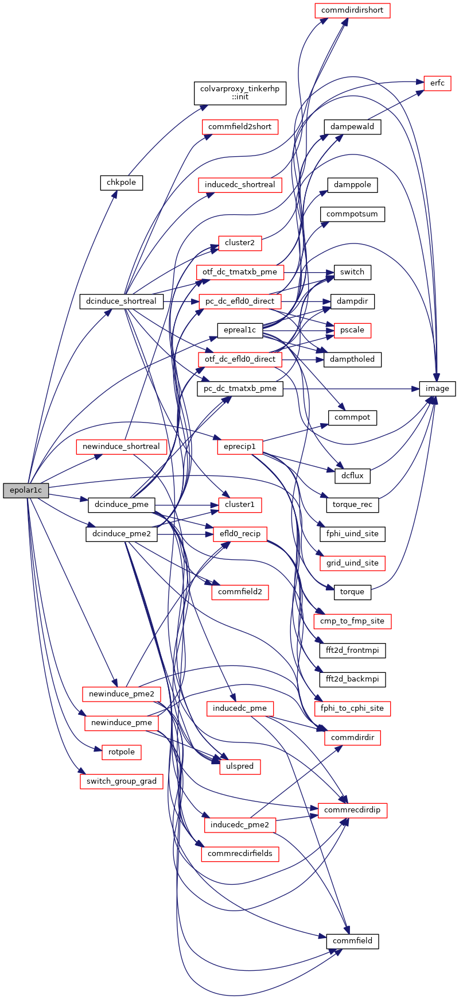
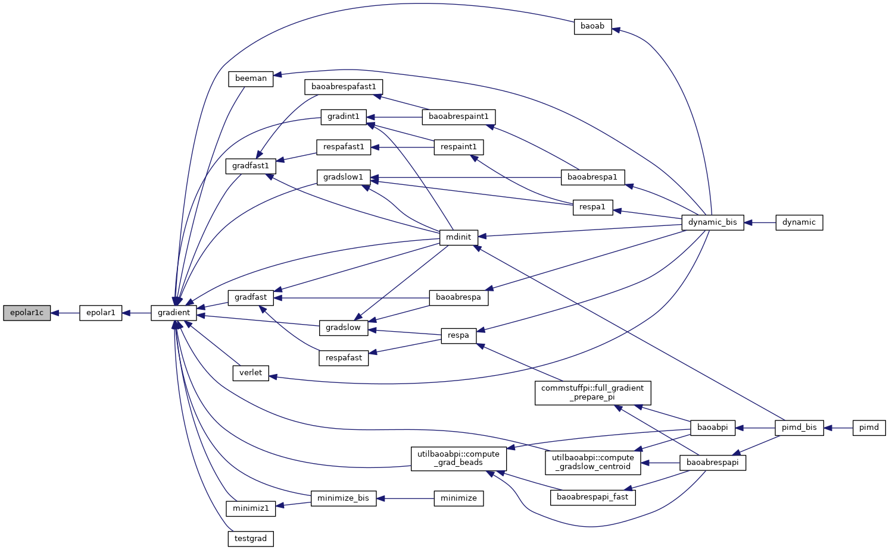
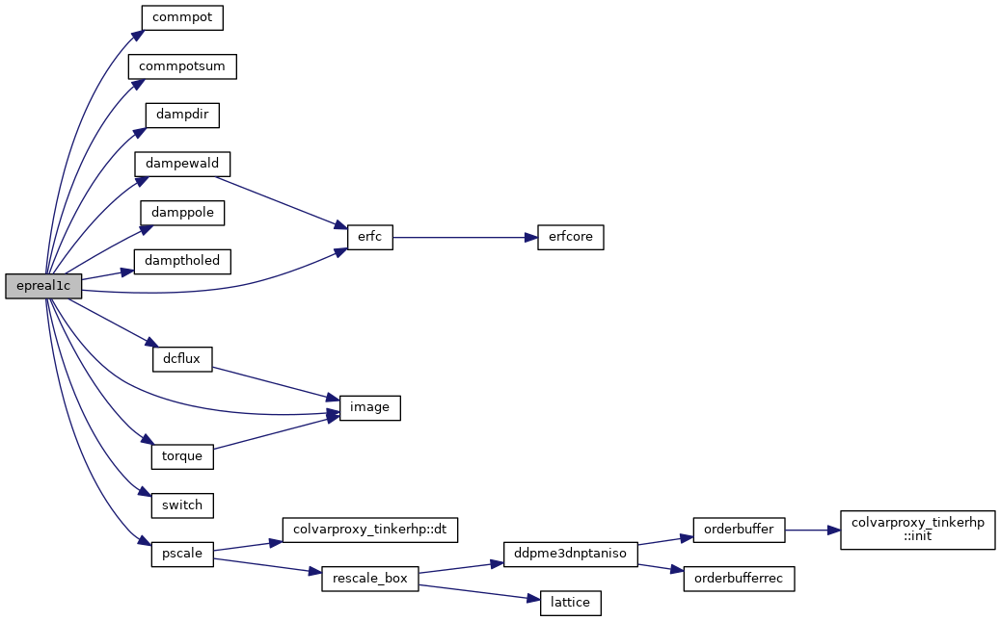
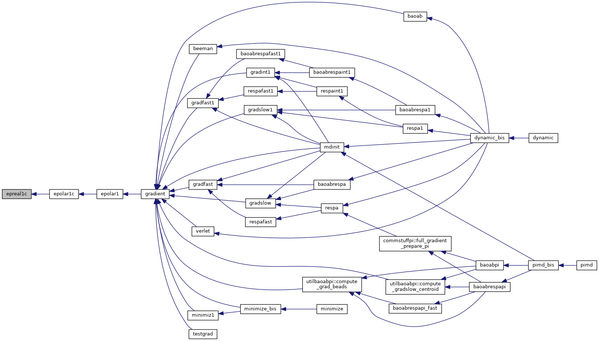
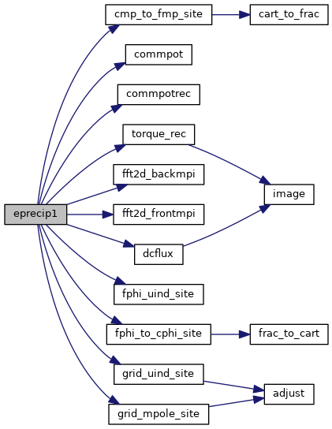

|
Tinker-HP v1.3
|
|
Tinker-HP v1.3
|
Go to the source code of this file.
Functions/Subroutines | |
| subroutine | epolar1 |
| calculates the induced dipole polarization energy and derivatives with respect to Cartesian coordinates More... | |
| subroutine | epolar1c |
| calculates the dipole polarization energy and derivatives with respect to Cartesian coordinates using particle mesh Ewald summation and a neighbor list More... | |
| subroutine | eprecip1 |
| evaluates the reciprocal space portion of the particle mesh Ewald summation energy and gradient due to dipole polarization More... | |
| subroutine | epreal1c |
| evaluates the real space portion of the Ewald summation energy and gradient due to dipole polarization via a neighbor list More... | |
| subroutine epolar1 | ( | ) |
calculates the induced dipole polarization energy and derivatives with respect to Cartesian coordinates
| no | params |
Definition at line 21 of file epolar1.f90.
References epolar1c(), and epolar1tcg().
Referenced by gradient().


| subroutine epolar1c | ( | ) |
calculates the dipole polarization energy and derivatives with respect to Cartesian coordinates using particle mesh Ewald summation and a neighbor list
| no | params |
Definition at line 66 of file epolar1.f90.
References chkpole(), dcinduce_pme(), dcinduce_pme2(), dcinduce_shortreal(), epreal1c(), eprecip1(), newinduce_pme(), newinduce_pme2(), newinduce_shortreal(), rotpole(), switch_group_grad(), and torque().
Referenced by epolar1().


| subroutine epreal1c | ( | ) |
evaluates the real space portion of the Ewald summation energy and gradient due to dipole polarization via a neighbor list
| no | params |
Definition at line 1233 of file epolar1.f90.
References commpot(), commpotsum(), dampdir(), dampewald(), damppole(), damptholed(), dcflux(), erfc(), image(), pscale(), switch(), and torque().
Referenced by epolar1c().


| subroutine eprecip1 | ( | ) |
evaluates the reciprocal space portion of the particle mesh Ewald summation energy and gradient due to dipole polarization
| no | params |
Definition at line 410 of file epolar1.f90.
References cmp_to_fmp_site(), commpot(), commpotrec(), dcflux(), fft2d_backmpi(), fft2d_frontmpi(), fphi_to_cphi_site(), fphi_uind_site(), grid_mpole_site(), grid_uind_site(), and torque_rec().
Referenced by epolar1c().

 1.8.5
1.8.5